Je suis fasciné par le monde des objets connectés.
J'ai eu l'occasion de traiter des données avec des
tableaux de bord dans des projets scolaires et
personnels. Je pratique le rugby depuis 15 ans à
Caen au niveau de Fédéral 2.
Diplôme d'ingénieur en Systèmes Embarqués option Systèmes Nomades
Dans l'école de l'ESIX Normandie à Caen. J'ai découvert dans cette formation le monde des Systèmes Embarqués, de la programmation en C, en Java et une introduction à l'IA.
2025
Programme court de premier cycle
A l'école de l'ETS Montréal au Canada. En tant qu'étudiant-athlète là-bas j'ai exploré le monde de l'IoT et de la programmation en HTML, CSS et Javascript.
2020-2023
Classe préparatoire aux grandes écoles en Physique-Chimie
Au lycée Victor Hugo à Caen, j'ai été initié à l'univers de la programmation en Python
2017-2020
Diplôme du baccalauréat mention bien
Dans le lycée Alain Chartier à Bayeux, j'ai développé un attrait pour le monde des sciences
2013-2017
DNB mention très bien
Dans le collège Alain Chartier à Bayeux
Compétences
Langues
Français — natifAnglais — B2 (TOEIC)Espagnol — B1Chinois — notions
Fasciné par le monde des objets connectés, je souhaiterais travailler dans le domaine de l'IoT et des systèmes embarqués.
Mes compétences sont la génération et le traitement de données circulant à l'aide de tableaux de bords, la création et le développement de pages web ou d'applications et tout ce qui concerne les systèmes embarqués utilisant divers capteurs.
J'ai un attrait particulier pour le monde du sport mais je peux m'adapter pour travailler dans d'autres secteurs.
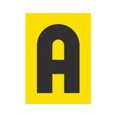
septembre 2024 — aujourd'hui
Professeur particulier
Acadomia - Caen et alentours
Soutien scolaire pour des lycéens et des étudiants en Mathématiques, en Physique-Chimie et en Programmation.
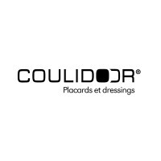
Mars 2026 — Septembre 2026
Stagiaire ingénieur IoT
Coulidoor - Verson
Conception, réalisation et déploiement d'un système Pick To Light pour le service de la préparation d'accessoires.
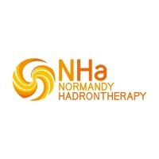
Mai 2025 — Juillet 2025
Stagiaire Ingénieur Automaticien
Normandy Hadrontherapy - Caen
Intervention sur le système Contrôle-Commande du projet du C-400.
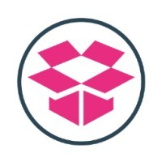
Ete 2024 — Ete 2025
Préparateur de commandes
Supplyweb - Rots
Préparation de commandes de clients de Supplyweb durant les mois de Juillet et Août 2024 et 2025.
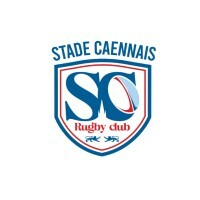
Octobre 2023 — Juin 2024
Service civique
Stade Caennais Rugby Club - Caen
Educateur des catégories (U10) et (U12).
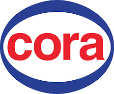
Ete 2020 — Ete 2022
Approvisionneur de rayon
Cora - Rots
Approvisionneur du rayon rentrée des classes durant les mois de Juillet et Août 2020 et 2021. Approvisionneur du rayon épicerie durant les mois du Juillet et Août 2022 et vendeur au rayon Fromagerie-Charcuterie durant le mois d'Août 2025.
Mes projets
Les projets sont pour moi l'occasion de réinvestir toutes les connaissances acquises. Je prends du plaisir à mobiliser mes connaissances pour répondre à une problématique.
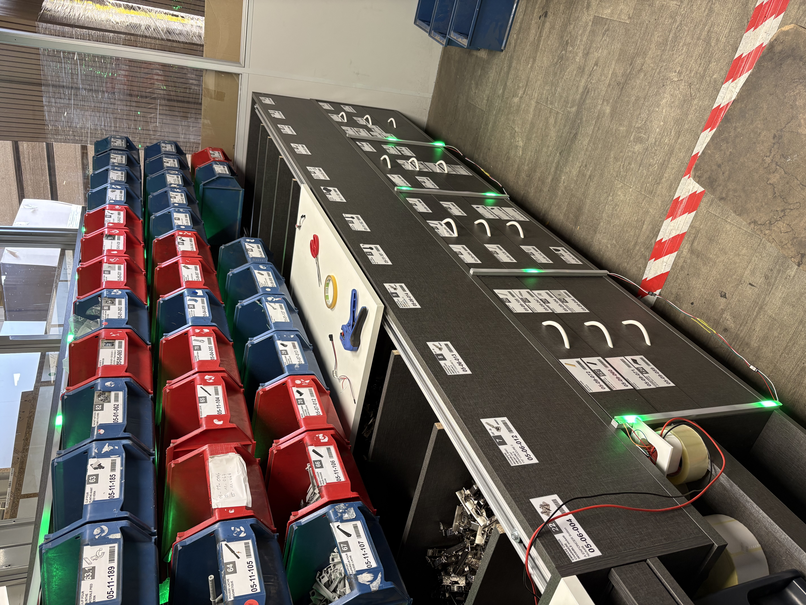
Pick To Light
Système de préparation de commandes assisté par LEDs (Python, ESP32, MQTT, Node-RED).
Voir le détail →
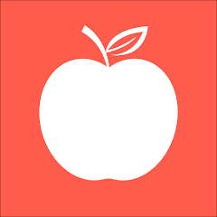
Application Calculateur de Macros
Application permettant de calculer le nombre de macros consommées lors de repas.
Voir le détail →
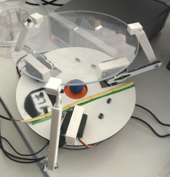
Bille sur plateau
Conception et réalisation d'un robot capable de stabiliser une bille sur un plateau.
Voir le détail →
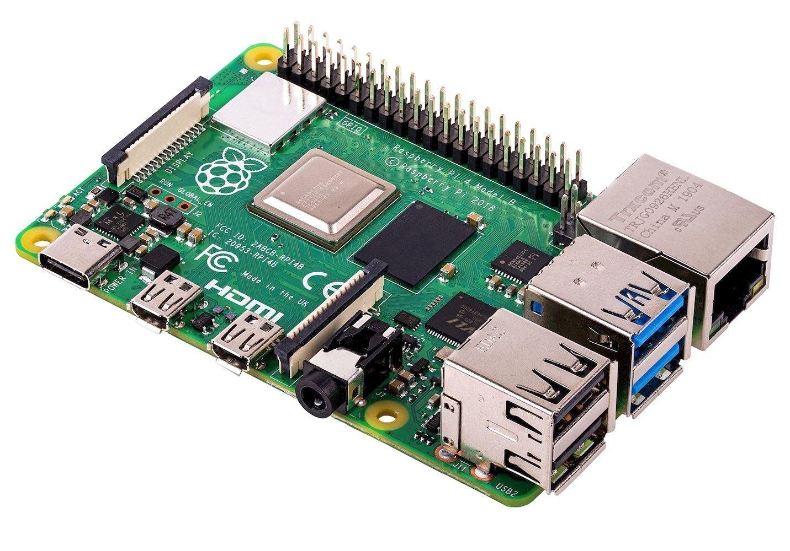
Asservissement en température d'une lampe
Asservissement en température d'une lampe avec un PID et à l'aide d'un capteur relié à une Raspberry.
Voir le détail →
Pick To Light
Ce projet est né d'un besoin de l'entreprise Coulidoor d'ajouter un détrompeur visuel pour ses opérateurs au service de la préparation d'accessoires car celui-ci représente un fort pourcentage des SAV de l'entreprise venant de la production.
La conception, la réalisation et le déploiement de ce Système Pick To Light est donc mon sujet de stage pour ma 5ème année dans l'école de l'ESIX Normandie.
Un système Pick To Light est un système permettant d'indiquer à l'opérateur la pièce à prélever à l'aide d'un indicateur visuel.
Le système Pick To Light que j'ai developpé est composé de microcontrôleurs : ESP32 et Raspberry Pi 5, de connecteurs (JST-SM et Wago), d'actionneurs (leds WS2812, écrans lcd1602), de multiplexeurs (PCA9548A), d'USB-c breakout
de profilés en aluminium et de caches opaques et il fonctionne de la manière suivante :
Architecture du système
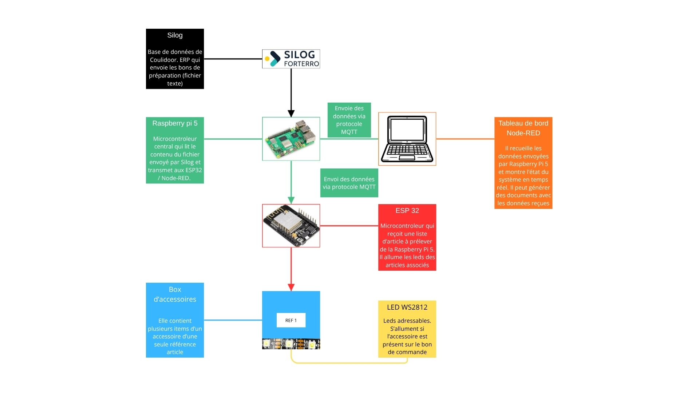
Silog qui est l'ERP de Coulidoor, détecte lorsqu'un opérateur clique sur un bon de commande, il génère ensuite un fichier qui est envoyé et décrypté par la Raspberry Pi 5,
celle-ci envoie ensuite aux différents ESP32 répartis dans toute la zone les emplacements des leds à allumer qui leurs sont associées. Les ESP32 allument ensuite ces leds.
Le système met à jour les leds, c'est-à-dire qu'il éteint toutes les leds puis allume les leds présent sur le bon de commande à chaque clic sur un nouveau bon de commande des opérateurs.
Tableau de bord Node-Red
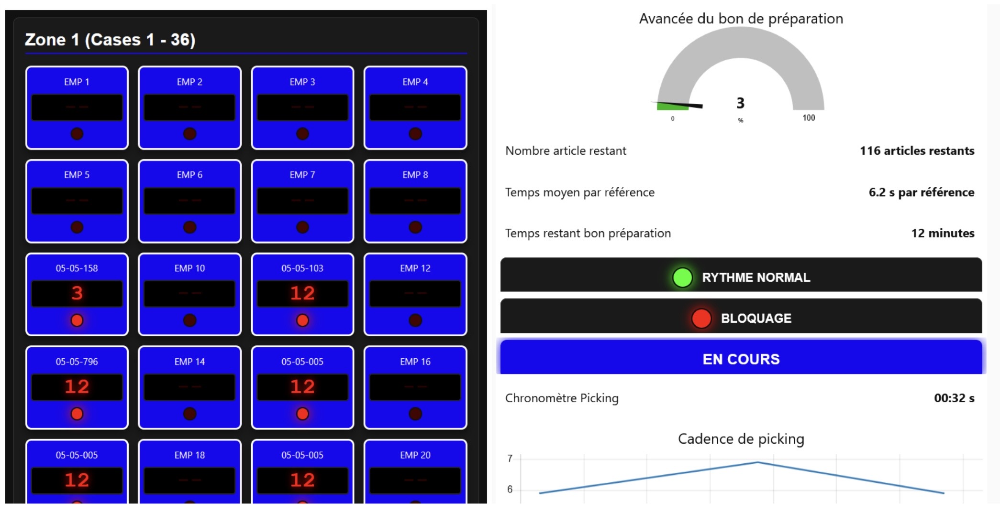
En même temps des données sur les leds allumées circulent, le tableau de bord permet de voir en temps réel les différentes leds allumées, il affiche également
des données sur l'avancée du bon de commande avec le temps de préparation et le temps restant prévu, il retraçe le temps de chaque prise d'article et indique
en temps réel si l'opérateur est ralenti ou même bloqué ce qui permet de savoir s'il faut intervenir pour débloquer la situation.
Système avec les leds
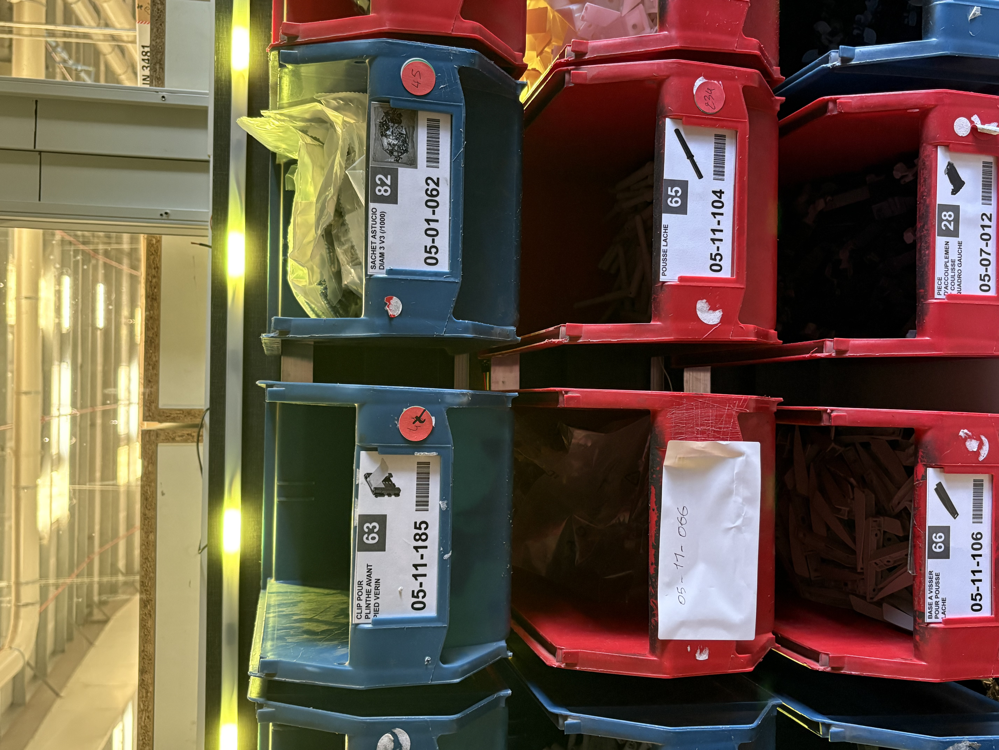
Chaque article possède son bandeau de leds, celui-ci est composé de leds adressables qui ont été découpés puis soudés à des connecteurs JST-SM.
C'est cette architecture qui a été choisie car elle permet une maintenance rapide su système, les pannes sont locales et n'impactent pas les autres parties du système,
le remplacement du bandeau défaillant suffit à relancer le bon fonctionnement du système. Ces bandeaux sont protégés par des profilés en aluminium
et par des caches opaques qui permettent de limiter la luminosité des bandeaux de leds et permettent donc d'assurer le confort des opérateurs. Le système permettant aux opérateurs de diminuer leur charge mentale.
Système avec les écrans
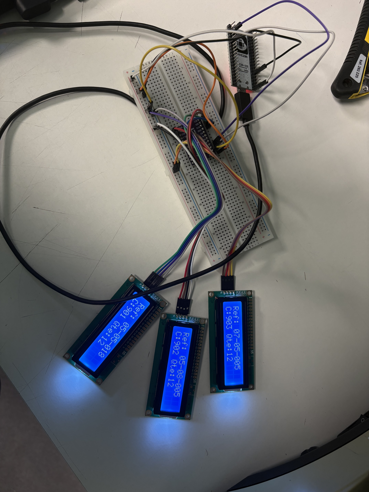
Une alternative aux leds peut-être les écrans. Ceux-ci, à l'aide de multiplexeurs permettent d'afficher la référence de l'article, son emplacement et permet également d'indiquer
le nombre d'articles à prélever.
Le but de ce projet était de relier les connaissances que j'ai acquises en autodidacte concernant le HTML, le CSS et le Javascript aux recherches que j'ai effectué concernant les macros que l'on consomme chaque jour lors des repas.
Ce projet est encore en développement.
Calcul des macros journalier
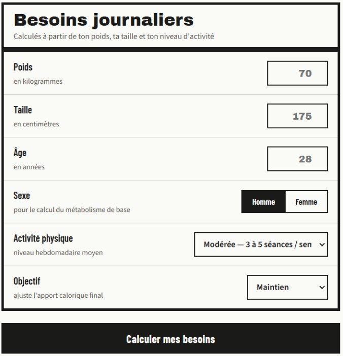
L'application est capable de calculer les besoins en protéines, glucides et lipides journaliers en fonction du sexe, du poids, de la taille, du nombre de séances de sport hebdomadaire et des objectifs de la personne qui utilise l'application.
Entrée des repas
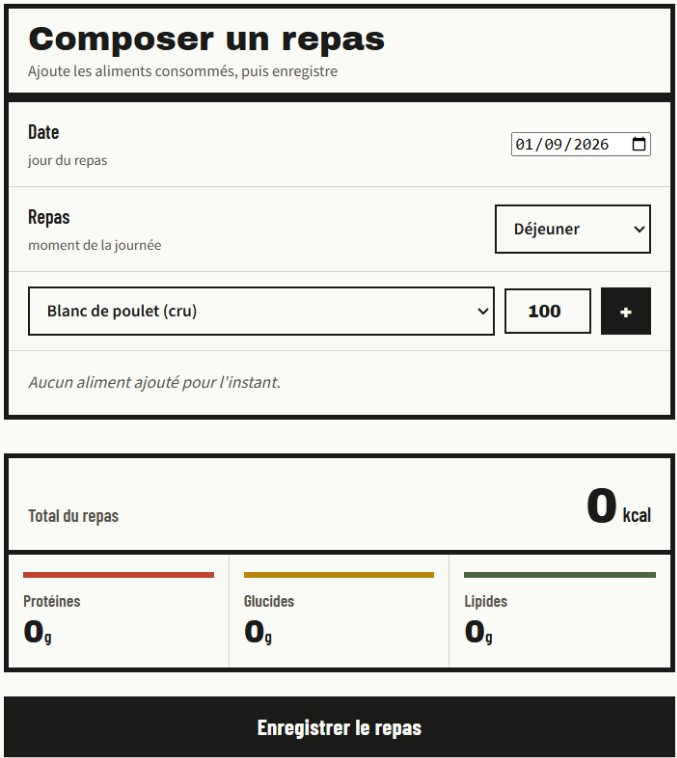
L'utilisateur entre les différents aliments qu'il a consommé durant le repas, il peut indiquer quel jour et à quel moment de la journée il a consommé ces aliments ainsi que leur quantité. L'application calcule la quantité de glucides, de protéines et de lipides ingéré par la personne à l'aide de sa base de données qui retrace les différentes caractéristiques de chaque aliment.
Graphique
Chaque repas entré dans l'application sert à alimenter des graphiques qui indiquent si on dépasse les apports journaliers de glucides, de lipides et de protéines, si on a respecté ces apports dans la semaine, dans le mois ou même dans l'année.
Bille sur plateau
Dans le cadre de ma 4ème année dans l'école de l'ESIX Normandie, nous devions réaliser un projet de robotique. Avec quelques uns de me camarades, nous avons été missioné de réaliser un système capable de maitenir une bille sur un plateau.
Durant ce projet, nous avons réutilisé toutes nos connaissances concernant la mécanique, l'électronique, l'automatique et la programmation. Nous avons utilisé
une imprimante 3D et une découpeuse laser pour réaliser les différentes pièces permettant de maintenir les servomoteurs utilisés, le plateau et le système de manière générale.
Il fallait trouver des équations mécanique pour planifier le comportement des différents servomoteurs, nous avons donc utilisé nos connaissances en mécanique acquises durant notre cursus pour trouver ces équations.
Des alimentations et des câbles permettaient d'alimenter en électricité le système. Nous avons utilisé une caméra pour suivre en temps réel la position de la bille sur le plateau et nous avons transmis des consignes aux servomoteurs en fonction de cette position relevée pour maintenir la bille sur le plateau.
Un régulateur PID a été utilisé pour contrôler la force de réaction des différents servomoteurs pour stabiliser la bille sur le plateau. A savoir qu'un régulateur PID est un outil permettant de stabiliser une valeur en fonction de la valeur d'entrée.
Finalement, le système n'était pas assez réactif car il y avait trop de délai entre la capture de l'image et la transmission des consignes aux servomoteurs donc le système ne permettait de maintenir que temporairement la bille sur le plateau.
Néanmoins ce projet nous aura permis de voir comment construire et réaliser un projet tout en nous coordonnant pour être le plus efficace possible et mener à bien la mission.
Ce projet constitue tout le travail pratique que j'ai effectué dans le cours de l'internet des objets que j'ai réalisé lors de ma mobilité au Canada à l'école de l'ETS.
Durant celui-ci, nous devions réaliser l'asservissement en température d'une lampe en jouant sur son allumage grâce à un signal PWM de la lampe et grâce à un capteur de température qui nous indiquait en temps réel la température de la lampe.
A savoir que la PWM est une technique permettant de simuler une tension variable en utilisant un signal numérique, nous jouons sur le rythme d'allumage de la lampe pour simuler une intensité.
J'ai appris à lire les données envoyés par le capteur avec le protocole SPI qui est le protocole par lequel communique le capteur. J'ai découvert comment contrôler l'intensité d'allumage de la lampe grâce à la génération d'un signal PWM.
J'ai réussi à contrôler la température de cette lampe grâce à un régulateur PID permettant de réguler la température de la lampe en jouant sur la fréquence d'allumage de la lampe. A savoir qu'un régulateur PID est un outil permettant de stabiliser une valeur en fonction de la valeur d'entrée.
Découverte des tableaux de bord NodeRed
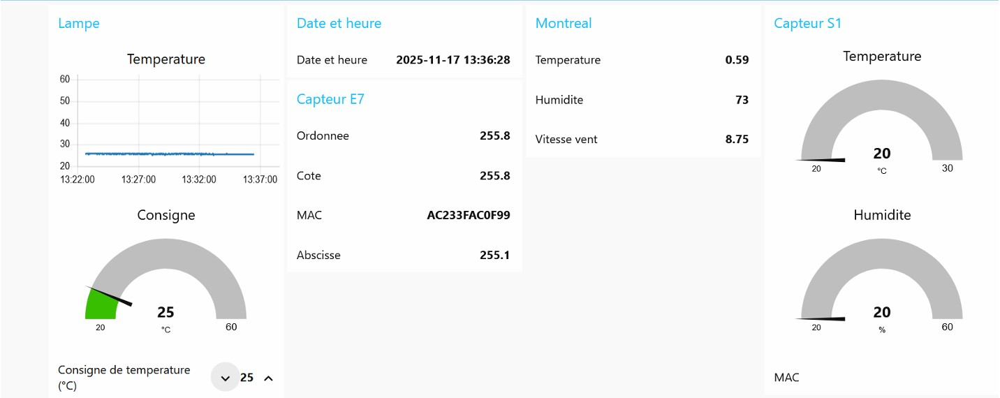
C'est au Canada que j'ai été initié au monde des objets connectés mais c'est aussi là-bas que j'ai appris à générer et à traiter des données via le protocole MQTT.
Pour traiter ces données, j'ai acquis des compétences pour générer des tableaux de bord avec l'outil NodeRed. Sur ce tableau de bord j'ai un graphique retraçant la température de la lampe durant les 30 dernières minutes.
On observe la consigne que je peux rentrer pour contrôler la température de la lampe. La date et l'heure actuelle ont été capturées, les données publiées par un capteur bluetooth avec son adresse MAC ont été récupérées.
J'ai également intercepté les données d'un accéléromètre avec son adresse MAC et enfin, j'ai transmis les données sur la météo de Montréal qui était publié sur un API.
Génération de fichiers CSV
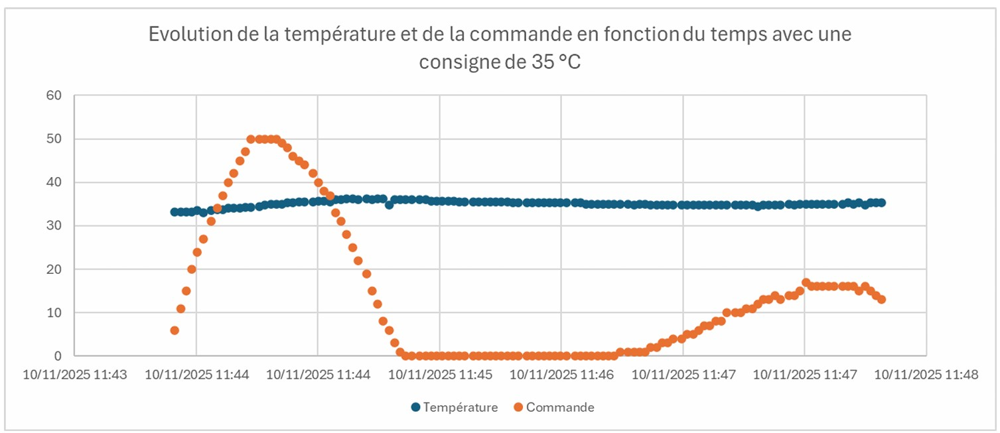
J'ai également étudier comment générer des fichiers CSV automatiquement grâce aux données qui circulent. Ainsi j'ai pu lancer l'asservissement en température de la lampe avec plusieurs consignes et le fichier CSV présentant les différentes caractéristiques que je lui ai imposé se générait automatiquement.
J'ai ensuite, pu utiliser ces différents fichiers CSV pour tracer l'évolution de la température de la lampe en fonction du temps et observer si le régulateur PID que j'ai utilisé était fonctionnel.
Je pratique le rugby depuis l'âge de 9 ans, ce sport m'a appris les valeurs essentielles de la vie : la vie en communauté, le travail d'équipe, le respect et tous les codes de bonne conduite.
C'est un sport qui inculque le mérite, l'exigence, la soif de progrès et le goût de l'effort.
Ce que ça m'apporte pour le travail en entreprise
Le Respect
Pour la hiérarchie, les collègues et surtout pour soi-même.
Le travail d'équipe
La capacité à échanger avec les autres pour mener à bien une mission.
L'exigence
Ceci me pousse à toujours élargir mon domaine de compétences.
Le mérite
Toute récompense n'est pas gratuite, elle est issue d'un travail rigoureux.
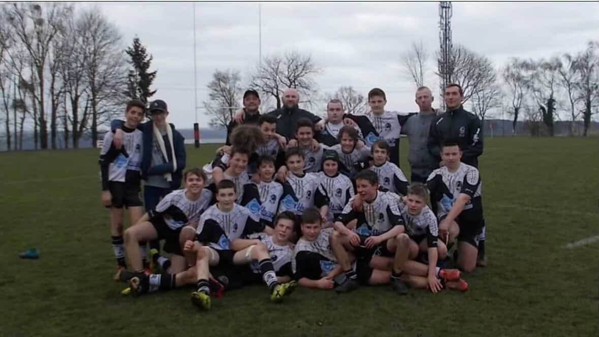
Mon parcours rugbystique chez les jeunes
J'ai commencé le rugby à 9 ans au Bayeux Rugby Club, c'est dans celui-ci que j'ai découvert l'amour du ballon ovale et que j'ai fait mes premières rencontres.
Mon parcours se poursuit avec le club d'Hérouville lorsque je suis monté en cadets. Nous avons fini champions en régional 2 malgré un effectif hétérogène qui avait du mal à rassembler 16 jeunes pour chaque match.
J'ai ensuite continué avec le rassemblement de 4 clubs du Calvados qui sont Bayeux, Caen, Hérouville et Bernières qui s'appelait le HCBB lorsque je suis monté en juniors.
Nous avons fini champions Grand-Ouest avec ce rassemblement.
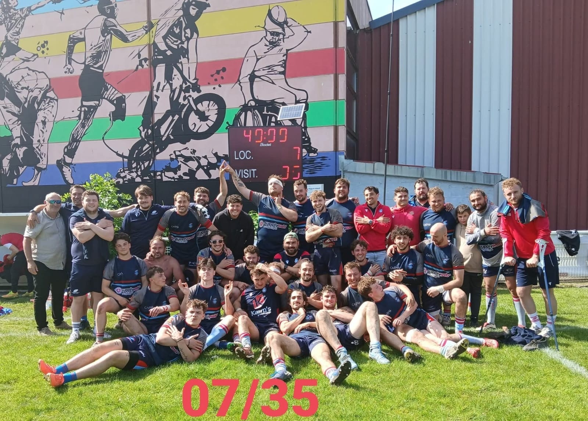
Mon parcours rugbystique à Caen
Après le rassemblement en juniors, j'ai décidé de continuer le rugby en séniors au Stade Caennais Rugby Club qui était en Fédéral 3 et qui avait pour ambition de monter en Fédéral 2.
J'occupais initialement le poste de premier ou deuxième centre mais après quelques saisons j'ai basculé vers le poste de pilier suite à la demande du staff.
Après 5 saisons de dure labeur et après une lutte administrative, nous avons finalement réussi à monter en Fédéral 2 avec une victoire sur le score de 07 à 35 contre le club du CS Clichy.
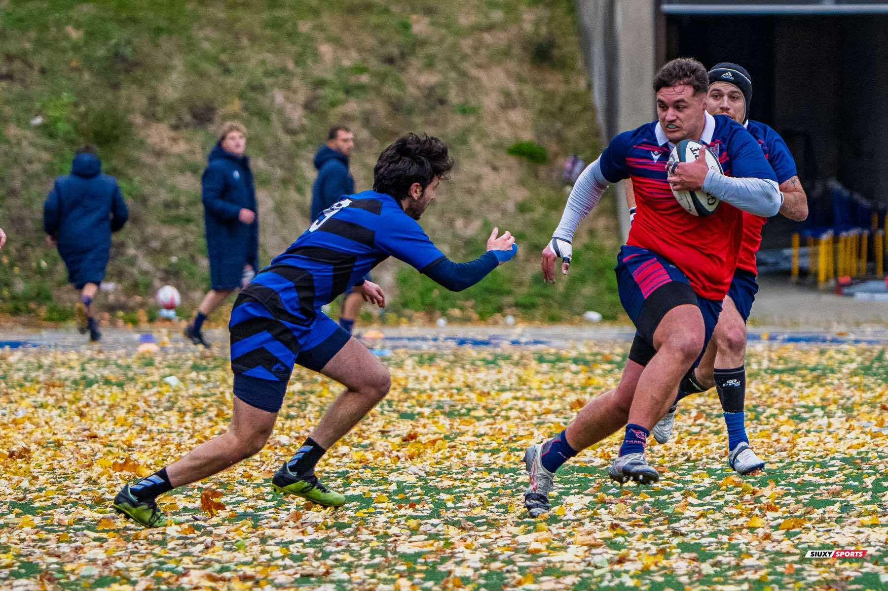
Mon parcours rugbystique à Montréal
Dans le cadre de ma mobilité obligatoire à l'étranger, j'ai choisi d'aller au Canada et plus particulièrement à Montréal. J'ai intégré l'ETS qui proposait un statut d'étudiant-athlète.
J'ai donc rejoins l'équipe de rugby des piranhas de l'ETS, j'ai appris à rejoindre un collectif et à jouer avec de nouveaux coéquipiers sur une courte durée. J'ai pu découvrir à quoi pouvait ressembler le haut niveau avec l'exigence physique, sportive et scolaire imposée par ce cursus.
Cette saison, nous avons fini champion du Québec et vice-champion du Canada. C'était une formidable aventure qui m'a permis de découvrir une autre culture, de nouvelles personnes et un lieu où le sport est essentiel dans la vie de chacun.
Me contacter
Si vous avez une quelconque question à propos de mes expériences ou de mes projets, n'hésitez pas à me contacter via les liens ci-dessous.
Je recherche actuellement un travail d'ingénieur en systèmes embarqués et/ou IoT dans le secteur de Caen et de ses alentours.